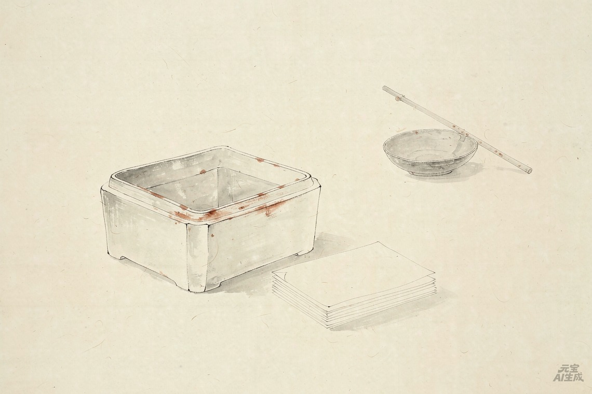
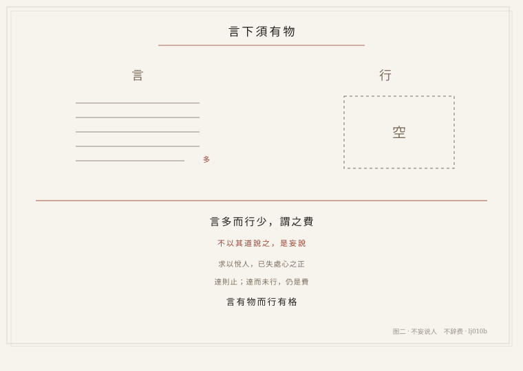

曲礼上 · 一·十一 · 第 10 课
一·十给了四把尺，这一课交代持尺的手：不许讨好，不许多话。
说什么事：不为了取悦人而说违道的话；不让话多过所做之事。
落在哪一层：义。两句都在「言」上，却是一外一内。
为何编在此位：四判要有判者。判者若求人高兴、若言浮于行，四把尺就握不住。故一·十言礼之能，一·十一言持礼者之戒。
【经】禮不妄說人，不辭費。
说 读悦，取悦，非「说话」。马氏以下注家多从陆氏音义读悦。
妄说人 郑注：「不以其道说之，是妄说。」疏引孔子语：「君子说之不以其道，则不说也。」
辞费 疏：「凡为人之道，当言行相副，今直有言而无行，为辞费。」费不在字数多，在言过其行。
不辞费 非禁言，禁言浮于行。集说：「躁人之辞多，君子之辞达，意则止，言者烦，听者必厌。」
礼不拿违道的话去取悦人，也不让话多过所做之事。
持礼以断人者，先须不受悦、不费辞——尺要正，先正持尺之手。
第一层 「妄」是无据 妄不是错，是无据。以道说人，也是「说人」，但不妄；不以道而说，则是拿话去换人的高兴。郑注用「以其道」三字作界：说人不是罪，无所据而说人才是。
第二层 悦人的代价 集说一句最狠：「求以悦人，已失处心之正，况妄乎。」求悦已不是正，妄则更下。因为求悦者先定了要对方高兴，再回头去找话说——次序一倒，话就只能是话，不能是判断。
第三层 费是言过其行 疏把「费」定死在「有言而无行」。这一条极实：话本身不缺，缺的是话后面的行。今日之费，不在长篇，在于一句漂亮话后面没有一件对应的事。
第四层 一句对外，一句对内 不妄说人，管的是朝外的口；不辞费，管的是朝内的口——对自己也不许把话说得比做得多。两句合看，口只有一张，朝里朝外都得紧。下文紧接「不逾节、不侵侮、不好狎」，身与口两头收束。
与今日何干 今日话术成业：一句「为你好」，一句「大家都这样」，都是妄说；一篇长文、一场直播，许了十件事，一件没做，都是辞费。此句的判法很朴素：这句话下面有没有一个「道」，这些话下面有没有一件「行」。
| 左 | 右 |
|---|---|
| 不妄说人：不以道说之即妄 | 不辞费：有言而无行即费 |
| 求悦已失处心之正 | 躁人之辞多，君子之辞达 |
| 说人非罪，无据而说是罪 | 禁者言过其行，非禁言长 |
| 朝外之口 | 朝内之口 |

